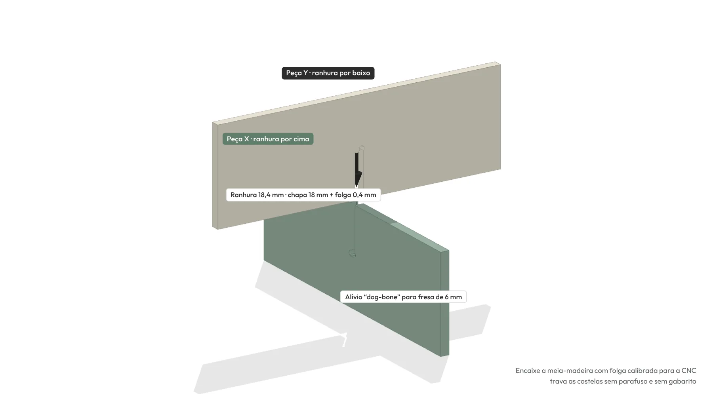

Digital fabrication
From model to cut part.
Formwork, moulds, furniture and building elements designed for CNC, laser cutting, 3D printing and robotic arms. Geometry comes straight from the model, every part numbered and interlocking, with no manual setting-out on site.
Six lines of work.
Each area can be hired on its own or combined with the others.
Rib formwork and moulds
Curved slabs and surfaces cast in CNC-cut plywood formwork, numbered to assemble like a puzzle.
Parametric joints
Joints that lock without screws, with clearance tuned to material and machine.
Cutting plans and nesting
More parts per sheet, less waste and cutting batches organised by construction stage.
Machine-ready files
DXF for CNC and laser, files for 3D printing and toolpaths for robotic arms.
Furniture and prototypes
One-off pieces and short runs, from parametric model to physical prototype.
3D scan verification
Point clouds compared against the model to catch deviations before pouring.
Examples.
Images produced by BRD. Those marked BRD project come from real projects; the others use illustrative models.




Want to apply this to your project?
Send us what you have, even if it's just an idea or a study file. We'll reply with a scope proposal.